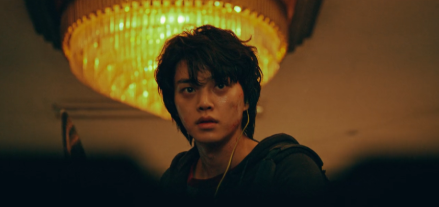

스위트홈이란?
네이버 웹툰 스위트홈을 원작으로 하는 넷플릭스 오리지널 드라마.
- 자극적인 소재들
- 루키가 가득한 등장인물
- 한정적인 공간의 활용
"인간의 욕망은 저주인가, 진화를 위한 것인가"
탐욕과 욕심이 넘치는 인간들에게 내리는 신의 형벌 같은 '괴물화 현상'이 퍼지고 있는 세상. 사람들은 세상이 망했다고, 더 이상 살아갈 희망이 사라졌다고 말한다. 하지만 <스위트 홈>의 주인공인 19살 소년 차현수는 괴물화 현상이 일어나기 이전부터 희망도, 꿈도 없는 삶을 살아가고 있었다. 엄마, 아빠, 여동생을 사고로 잃고 보살펴주는 어른 한 명 없이 낡은 빌라 '그린홈'으로 이사 온 소년은 8월이 끝나기 전에 자살할 것을 다짐한다. 그렇게 한 소년이 죽기로 마음먹었을 때, 세상은 진짜 멸망과 죽음을 향해 달리고 있었다. 괴물화의 정확한 원인은 밝혀지지 않았다. 추측하건대 그것은 사람의 욕망과 관련이 있다는 것. 코피, 혼절, 체온 저하 등의 증상을 보인다는 것. 그리고 괴물은 웬만해선 죽지 않는다는 것. 괴물이 아닌 인간들이 알아낼 수 있는 건 그뿐이었다.